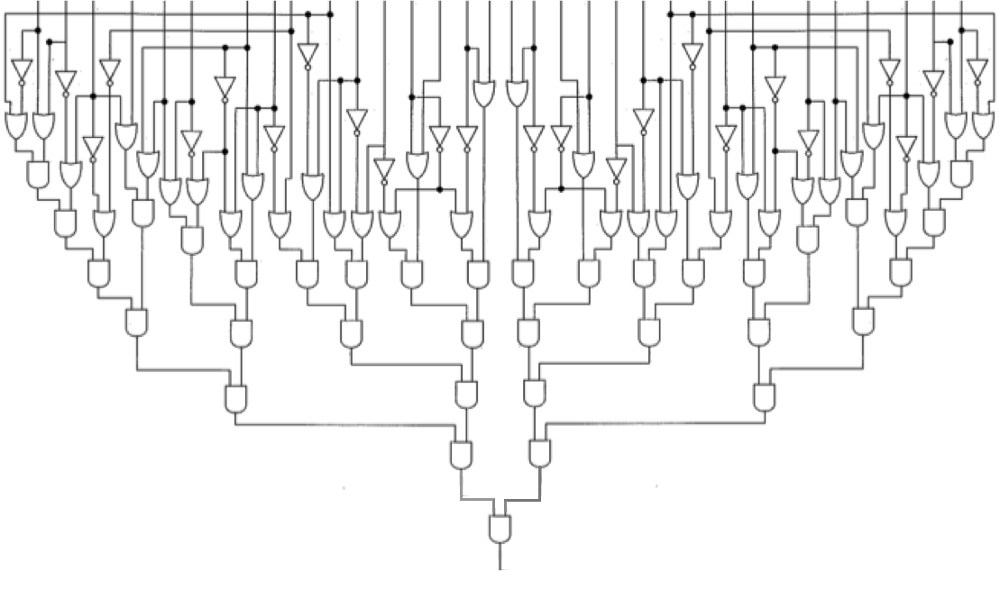

Circuit Satisfiability
Topics
Digital circuitry, parallel computing, performance analysis
Prerequisites Concepts
Boolean logic, parallel loops (or GPU kernels), reduction, metering, speedup, computational efficiency
Instructions
For a given binary circuit, the Circuit Satisfiability Problem is to find and output all of the circuit's
"solutions"--the inputs that cause that circuit to produce the value 1 or true (as opposed to 0 or false)--as
well as a count of the total number of solutions. For example, here is a 32-bit circuit diagram:

The 32 vertical lines at the top are the binary inputs to the circuit; the single vertical line at the bottom-middle is the circuit's binary output.
The circuit between the inputs and output is made up of AND-gates, OR-gates, and NOT-gates (inverters),
so we can model that circuit in software using a boolean expression consisting
of AND (&&), OR (||), and NOT (!) operators.
This problem can be solved using a brute-force approach, in which a for loop iterates through all the possible inputs,
and if a given input i causes the circuit to produce 1, the program outputs i and increments a counter.
After the for loop has finished, the program outputs the value of the counter.
Note: To find all solutions, the brute force algorithm must check 232 possible inputs to the circuit. This requires several minutes to finish on a typical Linux workstation (and many more minutes if using Python).
The assignment is:
- Starting with one of the sequential programs provided below, add internal timing calls (e.g., using MPI or OpenMP's Wtime functions) to the beginning and end of the sequential program to measure precisely how long it takes to solve the problem. Record that time in a spreadsheet, indicating that it is the time to solve the problem using 1 processing element (PE).
- Use parallel techniques to convert the sequential program into a parallel program that solves the problem. (Hint: Convert the for loop into a parallel loop.)
-
In your spreadsheet, record the raw times your parallel solution
requires to solve the problem using a given number of PEs.
For each PE value, calculate the speedup and computational efficiency.
Then create three well-labelled line-charts that (respectively)
show the relationship between the number of PEs and:
- the raw times,
- the speedup values, and
- the computational efficiency values.
- Write a 1-page report in which you explain what your charts reveal about the relationships between the number of PEs and the raw time, the speedup, and the computational efficiency of your parallel program.
Deliverables
- Your 1-page report.
- Your three charts (one per page, landscape, maximized to fill the page).
- Your spreadsheet, showing the data used to generate your charts.
- The source code of your parallel program.
Language Options
C, C++, Java, or Python
Learning Objectives
- Use the SPMD and Parallel Loop patterns to solve a problem.
- Compare a "chunks" and "slices" approach to the Parallel Loop pattern.
Difficulty Level: Introductory
Learning Objectives
- Use OpenMP's parallel for loop directive to solve a problem.
- Compare a "chunks" and "slices" approach to the Parallel Loop pattern.
Difficulty Level: Introductory
Learning Objectives
- Use CUDA in an application to offload work to the GPU.
Difficulty Level: Introductory
Select A Tab For More Information
Acknowledgements/References
A 16-bit version of this problem was presented in Parallel programming in C with MPI and OpenMP, by Michael J. Quinn, McGraw-Hill, 2004.